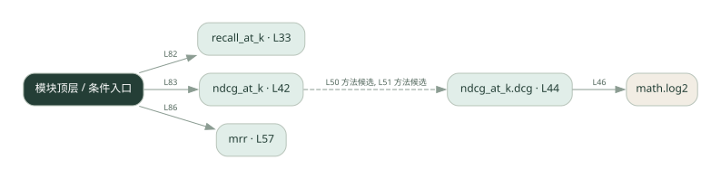

3-8 · 全课程第 48 节
检索质量指标
043.py
源码快照 2b66e819f3f0 · 静态解析 · 2026-09-10
01 / 要完成的事
计算 Recall@k、NDCG@k 和 MRR，对比命中数量和排序位置。
02 / 为什么要做
找到相关文档与把最相关结果排前面是不同能力。
03 / 当前代码状态
仍有下划线占位表达式，源文件行号：39, 54, 66。相应路径在补完前不能正常执行。
主要展示本地计算、内存状态或模拟流程；是否写文件/启动子进程请看调用表。 本次只做静态解析，没有运行练习，也没有替你填写或修改原代码。
04 / 调用图
打开大图 ↗实线：源码中的直接调用；虚线：函数引用/注册、动态调用或按方法名推断的候选。L 是调用所在源码行号。箭头不表示执行顺序或每次必经；分支、循环、异步调度及框架内部调用需结合源码。灰色是外部/未解析目标，橙色是动态分发；省略 print、len 和常规容器操作以减少干扰。孤立函数可能尚未接入。

先从 模块入口 出发，沿箭头找到本文件函数，再查看外部调用或动态分发。右侧调用清单保留所有静态调用点，能回到原文件逐行对照。
05 / 函数定位
| 函数 / 定义行 | 职责（源码注释） | 内部调用 |
|---|---|---|
recall_at_kL33 | 召回率@k：检索返回的前 k 个里，命中了多少相关文档（占全部相关文档的比例） | len, set |
ndcg_at_kL42 | NDCG@k：考虑排序位置——相关文档排得越靠前，得分越高 | sorted, dcg |
ndcg_at_k.dcgL44 | 以源码函数体为准；下列调用展示其依赖。 | sum, math.log2, enumerate |
mrrL57 | MRR：每个查询「第一个相关文档」出现在第几名，取倒数后求平均 | enumerate, scores.append, sum, len |
这样做的优点
能把“检索好不好”拆成可测指标。
代价与局限
需要可信相关性标注；空集合、重复结果和 k 的选择会影响比较。
适用场景
检索参数和排序方法的离线比较。
不宜直接照搬
没有标注数据时把指标当作真实用户满意度。
动手检验理解
保持命中文档不变，只把相关文档往后移，观察三个指标怎样变化。
有未实现位置时先预测，再补齐验证。能启动不等于逻辑正确。
查看全部 26 个静态调用 / 引用点
| 调用方 | 目标 | 源码行 | 类型 |
|---|---|---|---|
| recall_at_k | len | 38 | 调用 |
| recall_at_k | set | 38 | 调用 |
| ndcg_at_k.dcg | sum | 46 | 调用 |
| ndcg_at_k.dcg | math.log2 | 46 | 调用 |
| ndcg_at_k.dcg | enumerate | 46 | 调用 |
| ndcg_at_k | sorted | 49 | 调用 |
| ndcg_at_k | dcg | 50 | 调用 |
| ndcg_at_k | dcg | 51 | 调用 |
| mrr | enumerate | 64 | 调用 |
| mrr | scores.append | 66 | 调用 |
| mrr | scores.append | 69 | 调用 |
| mrr | sum | 70 | 调用 |
| mrr | len | 70 | 调用 |
| <模块入口> | print | 74 | 调用 |
| <模块入口> | print | 75 | 调用 |
| <模块入口> | print | 76 | 调用 |
| <模块入口> | print | 80 | 调用 |
| <模块入口> | print | 81 | 调用 |
| <模块入口> | sorted | 81 | 调用 |
| <模块入口> | print | 82 | 调用 |
| <模块入口> | recall_at_k | 82 | 调用 |
| <模块入口> | print | 83 | 调用 |
| <模块入口> | ndcg_at_k | 83 | 调用 |
| <模块入口> | print | 86 | 调用 |
| <模块入口> | mrr | 86 | 调用 |
| <模块入口> | print | 87 | 调用 |